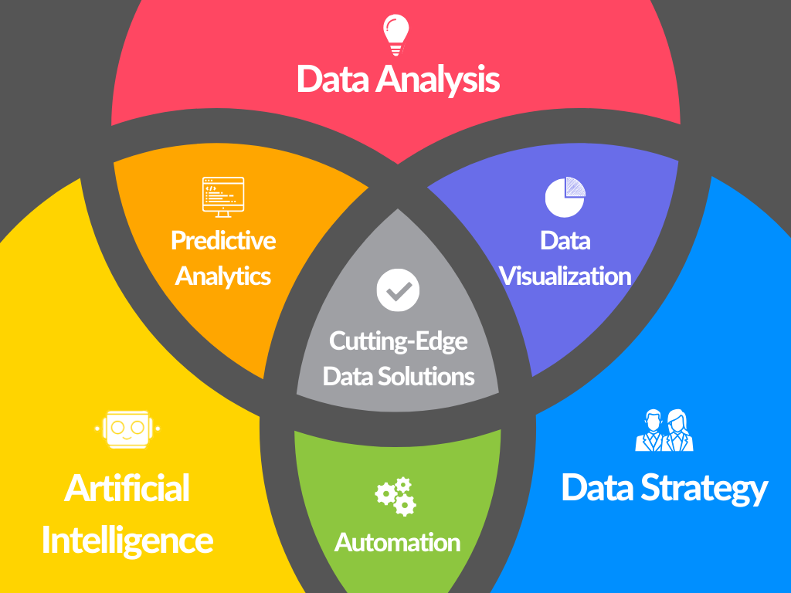

About Us
Our Story
Welcome to Ataviz Consulting, where our mission is to bring the power of transformative power of data analytics, artificial intelligence (AI), and automation solutions for businesses of all sizes. Founded in March 2020, Ataviz Consulting embarked on a journey to make Cutting-Edge Data Solutions accessible to every business, regardless of its scale. In a landscape often monopolized by tech giants like Google, Amazon, and Facebook, we advocate for universal access to the benefits of data solutions and insights. Our commitment is grounded in the belief that every business deserves to harness the transformative potential of Cutting-Edge Data Solutions.
Our Founder
Ataviz Consulting draws its strength from the vision and expertise of its founder, Nicholas Johnson. With over 15 years of unparalleled experience in analytics, data dashboards, automation, and data strategy, Nick has not only left an indelible mark as a distinguished data analyst consultant and Tableau developer but has also become a guiding force in the realm of data science. Nick's journey is a testament to his commitment to excellence, working across various industries and providing valuable strategies and insights.
Beyond his technical acumen, Nick brings a unique blend of education and sales experience to our team. Holding a degree in mathematics with a focus on statistical analysis, as well as a master's degree in education, Nick's multidisciplinary background enriches the Ataviz Consulting approach. His passion for combining mathematical precision with the practical applications of data analytics has been instrumental in shaping our mission to empower businesses through the transformative potential of data.
Select Honors & Awards
- Invited Speaker for the 1st Annual Syracuse Open Data Day
- Guest Appearance on the CNY Conversations Podcast
- Recognized by CIOReview as a Top 10 Promising Predictive Analytics Solutions Provider 2023
- Inaugural Winner of the Syracuse Data Challenge
Our Approach
We are dedicated to unlocking the power of data-driven decision-making for businesses. Our approach is meticulously crafted to address the individual needs and objectives of each client. With expertise in data analysis, artificial intellience, business intelligence, and automation, we specialize in tailoring solutions that drive tangible results. Through close collaboration, we work hand in hand with our clients to understand their unique challenges and opportunities.
Our methodology can be visualized with three key circles: Data Analysis, Data Strategy, and Artificial Intelligence. Each intersection represents a crucial aspect of our approach, including Data Visualization, Predictive Analytics, and Automation.
At the heart of it all lies the intersection of all three circles: Customized Data Solutions. This represents our core mission of delivering bespoke strategies tailored to each client's unique requirements. Beyond merely providing solutions, we empower our clients by illuminating the untapped potential within their data, driving growth and success.
Our Values
At Ataviz Consulting, transparency and accountability are the foundational pillars of our mission. We prioritize open communication and honesty, ensuring our clients are fully informed at every stage of our collaboration. Transparency means candidly sharing our processes, methodologies, and insights, fostering clear understanding and collaboration. We believe in providing our clients with comprehensive insights into how we work and the decisions we make, building trust and confidence in our partnership.
Equally vital to us is accountability. We hold ourselves responsible for the outcomes of our work, committed to meeting and exceeding our clients' expectations. Taking ownership of our actions and decisions, we consistently deliver high-quality results, upholding the integrity of our work. Through these values, we aim to forge enduring relationships grounded in trust, integrity, and mutual respect.